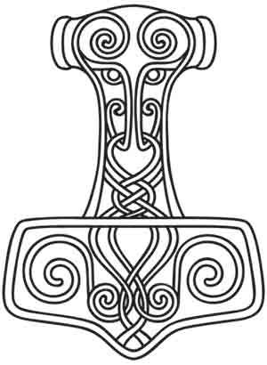

Greetings y'all!
I'm a web developer hailing from the lands of San Antonio, Texas.
After working years at a local car wash as a manager, I decided one day I needed a change of pace and atmosphere. A serendepitous occurance took place in my life that led me to web development. Since then, I've graduated from Thinkful, an online coding bootcamp, and have been working on projects at every oppurtunity. My life's never been better.

About Me
There's a couple different hobbies in my life that help contribute to the skill and interest I have in this field.
- Fitness / Health
- Music / Art
Let me explain:
My passion for fitness has allowed me to build discipline and grit throughout the last few years of my life. Web development also requires both of those values including patience and fortitude.
I come from a family with a strong love for the arts. Unsuprisingly, this love has crossed over into my life, as well. I believe having a creative spirit and an artistic motivation can assist anyone in this field. There is much joy in creative expression, as well as seeing a finished product come to fruition.
Finally, my experience in customer service and management has forced me to reckon with the reality of social interaction. It's extremely important. I enjoy connecting with well-rounded fellow developers, and my interpersonal skills make me solid team member across the board.
Contact
Please, feel free to contact or follow me.